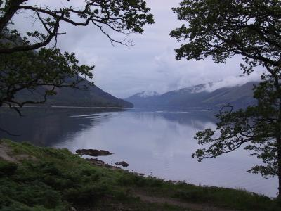
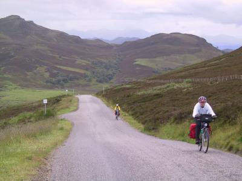

Lots of pics of this day of the tour are here.previous day next dayToday was the last official day of the tour. It was also the hardest: the longest mileage (60), the most climbing, and the worst weather.
 Loch Lochy When we started out from Spean Bridge it was raining lightly. We headed west to pick up the Great Glen Cycle Route along Loch Lochy. The GGCR goes from Fort William along a chain of lochs north to Inverness, 80 miles in total. We decided to use this as the alternative was the A82, which went up along the opposite side of the loch, and which we expected would have more traffic than we wanted to deal with. The GGCR followed a B-road for a bit, then it became a fairly smooth forest road. This had a fair few climbs and descents, and the damp sandy surface slowed us down.
Just before we got to Invergarry the route became paved, but went sharply up. Half the party, tired of this, used a walkway across a lock at the north end of Loch Lochy to get to the A-road. The A-road wasn't very pleasant, having a fair bit of traffic, but it was smooth and non-hilly, and we made quick progress into Invergarry, where we found a cafe for a much-needed lunch. The rain had pretty much stopped by the time we were done with lunch, although the air was still damp. The group split up, with people choosing different routes to get back and leaving the cafe at different times.
Simon and I ignored the next bit of the GGCR, taking the A-road, until the cycle route joined the towpath along the Caledonian Canal. This was a little bit rough, but was completely flat, and we pootled on into Fort Augustus. There we bought some sandwiches, as we weren't sure of finding anything between there and Inverness.
Fort Augustus is at the south end of the famous Loch Ness. According to one brochure I read, Loch Ness is the largest body of water in Britain. It is so large, in fact, that it holds more water than all the lakes and reservoirs of England and Wales put together!
 still climbing! From there we took a B-road that went on the opposite side of the loch from the A-road. It unfortunately did not hug the shore of the loch, but went inland a fair bit. The road went up. And up. And down a bit, then up some more. Then another short descent before we rose yet again. Finally, we were at the top, at a viewpoint 400m high. From there, we could see Inverness, 29 miles away. We put on jackets to keep off the wind chill and ate our sandwiches. We had only gone 5 miles since Fort Augustus, but it had taken us an entire hour!
We headed off down the hill coasting quickly, just as it started raining again. The miles rolled by. Even when we started pedalling again we were able to keep it into a high gear and ride fast. We noted a hotel/restaurant and were about to pass it by, when we noticed familiar bikes out front. We went in and joined their owners for tea and shortbread.
After being thus suitably refreshed, we noted that the rain had slacked off again, and we set out. We had a choice of B-roads to follow now, and we all chose the one closest to the loch in hopes that it would be flat. Well, it was pretty flat, but we didn't drop straight down to it: there were some pretty nasty climbs braking up the descent.
Finally we were at the edge of the loch. We all tucked in behind Neil an blasted along at a pretty good pace. After while, when there were only 10 miles to go, Simon suggested that we drop off the pace line, eat some chocolate, and roll into Inverness at a more leisurely pace. I agreed, and so we pulled off an ha our chocolate break.
As we headed out again it started raining again, this time in earnest. We pedalled along at a good pace, me stuck closely to Simon's back wheel. Soon, however I was in pain. I've notice this a few time before, that when it rains the salt runs into my eyes, and hurts like hell. At first only my right eye was affected, so I could stop the pain by closing it. This destroyed my binocular vision of course, so I could only tell how close I was to Simon by how large he was.
We came across a few others who had dropped off of Neil's pace line, and after sharing out chocolate all around, we set off again. And again my eyes hurt like mad, so I was struggling to hold a straight line and not crash into the bike in front of me, as I alternately wiped my eyes, and close them to try to ease the pain.
It had gotten quite dark, so I flipped the switch on my hub dynamo powered headlight. I wished I could have turned on my rear light as well, but it is battery-powered and attached to the back of my rear rack, and I can't turn it on while riding. I began to wish I had a more normal dynamo setup, where the dynamo powers the rear light as well as the front. Then your front light switch turns on the rear light as well.
Somewhere around here, my bike started making noises. These noises happened only when I pedalled, and sounded like metal grating on metal. I thought the I'd better get it checked out in the morning.
After what seemed like a very long time, finally we were on the outskirts of Inverness. Simon, who had the B&B marked on his GPS unit (my husband the gadget freak!) lead us straight to the door, and we unloaded our bags and parked our bikes.
Only when I'd had a shower and was warm and dry and we'd gone for a pizza dinner did I realize why my eyes hurt so much: the rain was running through the vents in my helmet, leaching the accumulated sweat out of my pad, and washing it into my eyes. I could have ended the pain immediately by simply removing my helmet! Too bad I didn't realize that then, and I had just put up with the nearly-blinding pain in my eyes as we rode towards Inverness.
Miles for today: 60.